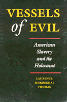

A philosopher examines the moral evils visited upon African Americans and Jews
A philosopher examines the moral evils visited upon African Americans and Jews


 A philosopher examines the moral evils visited upon African Americans and Jews
A philosopher examines the moral evils visited upon African Americans and Jews

|  |
Vessels of EvilAmerican Slavery and the HolocaustLaurence Mordekhai Thomaspaper EAN: 978-1-56639-100-9 (ISBN: 1-56639-100-8) |
"This text is an admirably lucid and cogently argued comparison of two profoundly evil institutions, one that recognizes the differences between the Jewish and African American experiences of oppression without offering invidious comparisons.... An important and engrossing book."
—Publishers Weekly
Two profound atrocities in the history of Western culture form the subject of this moving philosophical exploration: American Slavery and the Holocaust. An African American and a Jew, Laurence Mordekhai Thomas denounces efforts to place the suffering of one group above the other. Rather, he pronounces these two defining historical experiences as profoundly evil in radically different ways and points to their logically incompatible aims.
The author begins with a discussion of the nature of evil, exploring the fragility of human beings and the phenomena of compartmentalizing, unquestioning obedience to authority, and moral drift. Citing compelling examples from history and contemporary life, he characterizes evil acts in terms of moral agency, magnitude, and intent.
With moving testimony, Thomas depicts the moral pain of African Americans and Jews during their ordeals and describes how their past as victims has affected their future. Without invidious comparison, he distinguishes between extermination and domination, death and natal alienation, physical and mental cruelty, and between being viewed as irredeemable evil and as a moral simpleton. Thomas also considers the role of blacks and Jews in the Christian narrative.
In Vessels of Evil, Thomas also considers the ways Jews and blacks have gone on to survive. He analyzes the relative flourishing of Jews and the languishing of blacks in this country and examines the implications of their dissimilar tragedies on any future relationship between these two minorities.
"...a readable, even absorbing philosophical examination of the many faces of evil....This study deserves a wide readership."
—Library Journal
"This rich and interesting work is an important contribution to the philosophical study of moral psychology. Although a number of philosophers have explored moral issues raised by the Holocaust or by American Slavery, so far as I know, Thomas is the first important philosopher to undertake a large-scale comparison of the two."
—David Blumenthal, Professor of Philosophy, Georgia State University
"This powerful, philosophically thought-provoking, psychologically provocative work is bound to be an extremely important book in both ethics and social thought. Thomas takes on monumental subjects: not just the Holocaust and Slavery but a theory on the human condition and the notion of evil as well."
—Robert C. Solomon, Quincy Lee Centennial Professor of Philosophy, University of Texas at Austin
Preface
Part I: On Becoming an Evil Self
1. Two Faces of Evil: An Introduction
2. The Human Condition
Good and Bad •
Immoral Rapprochement •
Understanding Obedience to Authority •
Obeying Authority and Becoming Morally Sullied
3. The Moral Community
Common-Sense Morality •
Moral Drift •
The People of Le Chambon
4. Characterizing Evil
Acts of Evil
5. The Psychology of Doubling
The Problem •
Doubling and Multiple Personality Disorder •
The Psychology of Doubling •
Moral Disassociation
Part II: The Institutions
6. American Slavery and the Holocaust
Conception of the Victims •
The Institutions
7. Murderous Extermination and Natal Alienation
Doing Justice to the Difference •
Ultimates in Evil: Alienation and Extermination •
Self-Hatred
Part III: Surviving into the Future
8. After the Ashes
Jews •
Blacks •
Historical Contexts •
Group Autonomy
9. The Fate of Blacks and Jews
The General Problem of Cooperation •
Neither Coercive nor Affirming Cooperation •
Cooperation and Having a Narrative •
Blacks and Jews
Name Index
Subject Index
Laurence Mordekhai Thomas, Professor of Philosophy and Political Science Affiliate at Syracuse University, is also the author of Living Morally (Temple).
Philosophy and Ethics
Jewish Studies
African American Studies
© 2015 Temple University. All Rights Reserved. This page: http://www.temple.edu/tempress/titles/917_reg.html.